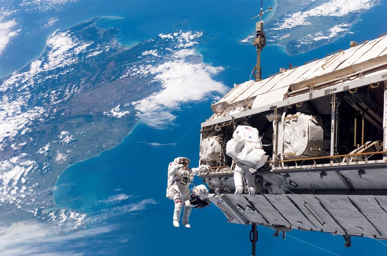

SpaceX has gained worldwide attention for a series of historic milestones. It is the only private company capable of returning a spacecraft from low Earth orbit, which it first accomplished in 2010. The company made history again in 2012 when its Dragon spacecraft became the first commercial spacecraft to deliver cargo to and from the International Space Station.
SpaceX successfully achieved the historic first reflight of an orbital class rocket in 2017, and the company now regularly launches flight-proven rockets. In 2018, SpaceX began launching Falcon Heavy, the world’s most powerful operational rocket by a factor of two.
Distance to Earth:
Miles
Distance to Mars:
Miles
Tesla roadsters speed:
Mph
Has been ins space for:
Days
Here you will find information about our sucsessfull missions, with the mission title, the date, and a description about the mission. click the read more button to show all information
The International Space Station is a large spacecraft in orbit around Earth. It serves as a home where crews of astronauts and cosmonauts live. The space station is also a unique science laboratory. Several nations worked together to build and use the space station. The space station is made of parts that were assembled in space by astronauts. It orbits Earth at an average altitude of approximately 250 miles. It travels at 17,500 mph. This means it orbits Earth every 90 minutes. NASA is using the space station to learn more about living and working in space. These lessons will make it possible to send humans farther into space than ever before.
The first piece of the International Space Station was launched in November 1998. A Russian rocket launched the Russian Zarya (zar EE uh) control module. About two weeks later, the space shuttle Endeavour met Zarya in orbit. The space shuttle was carrying the U.S. Unity node. The crew attached the Unity node to Zarya.
More pieces were added over the next two years before the station was ready for people to live there. The first crew arrived on November 2, 2000. People have lived on the space station ever since. More pieces have been added over time. NASA and its partners from around the world completed construction of the space station in 2011.
The space station has the volume of a five-bedroom house or two Boeing 747 jetliners. It is able to support a crew of six people, plus visitors. On Earth, the space station would weigh almost a million pounds. Measured from the edges of its solar arrays, the station covers the area of a football field including the end zones. It includes laboratory modules from the United States, Russia, Japan and Europe.
In addition to the laboratories where astronauts conduct science research, the space station has many other parts. The first Russian modules included basic systems needed for the space station to function. They also provided living areas for crew members. Modules called "nodes" connect parts of the station to each other.
Stretching out to the sides of the space station are the solar arrays. These arrays collect energy from the sun to provide electrical power. The arrays are connected to the station with a long truss. On the truss are radiators that control the space station's temperature.
Robotic arms are mounted outside the space station. The robot arms were used to help build the space station. Those arms also can move astronauts around when they go on spacewalks outside. Other arms operate science experiments.
Astronauts can go on spacewalks through airlocks that open to the outside. Docking ports allow other spacecraft to connect to the space station. New crews and visitors arrive through the ports. Astronauts fly to the space station on the Russian Soyuz. Robotic spacecraft use the docking ports to deliver supplies.
The space station has made it possible for people to have an ongoing presence in space. Human beings have been living in space every day since the first crew arrived. The space station's laboratories allow crew members to do research that could not be done anywhere else. This scientific research benefits people on Earth. Space research is even used in everyday life. The results are products called "spinoffs." Scientists also study what happens to the body when people live in microgravity for a long time. NASA and its partners have learned how to keep a spacecraft working well. these lessons will be important for future space exploration.
NASA currently is working on a plan to explore other worlds. The space station is one of the first steps. NASA will use lessons learned on the space station to prepare for human missions that reach farther into space than ever before.

Take the rocket back up